数据通信基础
计算机网络的核心基础 —— 数据通信基础。因为计算机网络本质就是 “计算机技术 + 数据通信技术” 的结合体
数据通信系统
计算机网络技术是计算机技术和数据通信技术相结合的产物
计算机负责 “产生和处理数据”，而数据通信系统负责 “把数据准确、高效地送到目的地”
通信系统的两大传输方式
数据传输的核心是 “信号的传递”，根据信号处理方式不同，分为模拟传输和数字传输
模拟传输
只关注信号的 “波形本身”，不关心信号承载的内容。
- 传输过程中，核心目标是尽量减少信号的衰减（信号强度减弱）和外界噪声干扰。
- 长距离传输方案：使用 “信号放大器”—— 把衰减后的信号幅度放大，让信号能继续传输。但是放大器会同时放大信号和混入的噪声
- 老式有线广播、早期无绳电话、传统有线电视（未数字化前）
数字传输
关注信号承载的 “数字内容”（即 0 和 1 的比特序列），而非单纯的波形。
- 兼容性强：既能直接传输电脑产生的数字信号，也能先把模拟信号（如语音、音乐）转换成数字信号后再传输。
- 长距离传输方案：使用 “转发器”（也叫中继器）—— 转发器会先识别接收信号中的 0 和 1，然后 “重新生成” 一个无噪声的干净信号发送出去，从根本上消除了噪声累积。
- 互联网、手机数据网络、光纤通信。
数据通信系统的组成
信源：产生要发送数据的设备，是数据的源头。
- 实例：发送邮件的你的电脑、录制语音的手机、上传文件的服务器。
发送设备：将信源产生的原始数据，转换成适合在传输系统中传输的信号，即对数据进行编码
- 实例： “调制解调器（Modem）”—— 电脑产生的是数字比特流，而公用电话网只能传模拟信号，Modem 就负责把数字信号 “调制” 成模拟信号，这个过程就是 “编码”。
传输系统：连接源系统和目的系统的物理线路或网络，是数据传输的载体。
- 实例：网线、光纤、无线电波、公用电话网、互联网骨干网。上面示例中，“公用电话网” 就是核心传输系统。
接收设备：将传输系统送来的信号，解码还原成信宿能识别的原始数据（与发送设备的功能相反）。
- 实例：接收方 PC 机上的 “调制解调器”—— 把电话网传来的模拟信号 “解调” 回数字比特流，交给 PC 机处理。
信宿：接收并处理数据的目的设备，是数据传输的终点。
- 实例：接收邮件的朋友的电脑、播放语音的耳机、存储文件的云服务器。
[!note]
- 信源（你的 PC 机）产生输入信息（比如一份文档），转换成数字比特流；
- 发送设备（你的 Modem）将数字比特流编码成模拟信号；
- 模拟信号通过传输系统（公用电话网）远距离传输；
- 接收设备（朋友的 Modem）将模拟信号解码回数字比特流；
- 信宿（朋友的 PC 机）接收数字比特流，还原成文档并显示 —— 整个数据通信过程完成。
主要技术指标
码元速率（波特率）
定义：每秒通过信道传输的 “码元数”（码元是承载数据信息的基本信号单元，比如一个高电平、一个相位变化、一个频率变化）。或者说是每秒中信道的电平变化数
单位：波特（Baud），1 波特 = 1 个码元 / 秒。
物理意义：描述信号的 “传输节奏”—— 码元速率越高，信号变化越频繁，信道的带宽需求越大。
数据传输率（比特率）
定义：每秒通过信道传输的 “二进制位数”（即 0 和 1 的个数）。
- 单位：比特 / 秒（bps 或 b/s），常用单位有 kbps（千比特 / 秒）、Mbps（兆比特 / 秒）、Gbps（吉比特 / 秒），换算关系：1Gbps=1000Mbps=10⁶kbps=10⁹bps。
- 物理意义：描述数据的 “传输速度”—— 这是我们最常说的 “网速”，比如 100Mbps 宽带、5G 的 1Gbps 峰值速率，本质都是数据传输率。
与码元速率的关系：数据传输率 S = 码元速率 B × log₂N（N 是码元的状态数，即一个码元能表示的比特数）。
- 例 1：N=2（每个码元表示 1 个比特，比如高电平 = 1，低电平 = 0），则 S=B×log₂2=B（码元速率 = 比特率）；
- 例 2：N=4（每个码元表示 2 个比特，比如 4-PSK 调制，4 种相位对应 00、01、10、11），则 S=B×log₂4=2B（比特率是码元速率的 2 倍）。
误码率（码元差错率）
定义：传输过程中 “出错的码元数” 占 “传输的总码元数” 的比例。
- 公式：误码率 Pₑ = 出错的码元数 / 总码元数。
物理意义：描述系统的 “码元传输准确性”—— 误码率越低，码元传输越可靠。
误比特率（比特差错率）
定义：传输过程中 “出错的比特数” 占 “传输的总比特数” 的比例。
- 公式：误比特率 Pᵦ = 出错的比特数 / 总比特数。
- 物理意义：描述系统的 “比特传输准确性”—— 这是最常用的可靠性指标（因为数据最终以比特为单位存储和处理）。
- 与误码率的关系：当每个码元只表示 1 个比特（N=2）时，误比特率≈误码率；当每个码元表示多个比特（N>2）时，一个码元出错可能导致多个比特出错，此时误比特率 > 误码率。
| 指标名称 | 定义核心 | 单位 | 核心作用 | 典型数值范围 |
|---|---|---|---|---|
| 码元速率（B） | 码元数 / 秒 | 波特（Baud） | 描述信号传输节奏，决定带宽需求 | 电话线：几千波特；光纤：几十万波特 |
| 数据传输率（S） | 比特数 / 秒 | bps | 描述数据传输速度（网速） | 宽带：100Mbps；5G：1Gbps |
| 误码率（Pₑ） | 出错码元数 / 总码元数 | 无（比例） | 描述码元传输准确性 | 光纤：<10⁻⁹；铜线：10⁻⁶ |
| 误比特率（Pᵦ） | 出错比特数 / 总比特数 | 无（比例） | 描述比特传输准确性（常用） | 互联网：<10⁻⁶；存储：<10⁻¹² |
信号和数据编码
信息→数据→信号（编码的本质）
- 信息：我们要传递的 “内容”（比如微信消息 “晚上吃火锅”、图片、文件）；
- 数据：信息的 “数字化表示”—— 计算机只能处理 0 和 1，所以所有信息都会被转换成二进制比特流（比如 “晚上吃火锅” 会被编码成一串 0 和 1）；
- 信号：数据的 “物理载体”——0 和 1 是抽象的，必须转换成电磁信号（比如网线里的电压变化）或光信号（比如光纤里的激光明暗变化），才能在传输媒体上传输。
- 承载数字信息的信号有两种选择：可以是模拟信号，也可以是数字信号
模拟信号：连续变化的 “波形”
- 随时间连续变化的信号
模拟信号的核心是 “连续”—— 它的数值不会突然跳变，而是平滑过渡。
- 单模拟信号：最典型的是正弦波（比如数学里的正弦函数图像），是构成所有复杂模拟信号的 “基本单元”；
- 简单模拟信号的核心：正弦波三要素（考点重点）；数学表达式是：x(t)=Asin(2πft+φ)
- 振幅 A：信号的 “强弱程度”（对应声音的 “大小”）；频率 f：信号每秒振动的次数（单位：赫兹 Hz），对应 “信号变化的快慢”；相位 φ：信号的 “起始位置”
- 复杂模拟信号：由多个不同频率、振幅、相位的正弦波叠加而成
数字信号：离散跳变的 “脉冲”
- 离散的、值的变化瞬时发生的信号
数字信号的核心是 “离散” 和 “跳变”—— 它的数值只有有限个（比如只有高、低两个电平），而且数值变化是瞬间完成的（没有中间过渡）。
- 数字信号是为了传递 0 和 1，所以参数都和 “比特（bit）” 相关：
- 比特间隙：发送 1 个比特（1 或 0）所用的时间
- 比特率：每秒能发送的比特数（单位：bps 或 b/s，比特 / 秒），是衡量数字信号传输速度的核心指标。
信息编码
编码 = 信息用信号来表示的方法。这里的 “信息” 可以是数字形式（0/1），也可以是模拟形式（比如声音、声波）；“信号” 也分模拟和数字两类
编码的四种方式，本质是 “输入信息类型” 和 “输出信号类型” 的组合
| 编码方式 | 输入（要传递的信息） | 输出（传输的物理信号） | 核心用途（场景） | 通俗类比 |
|---|---|---|---|---|
| 数字 — 数字编码 | 数字信息（0/1 比特流） | 数字信号（高低电平 / 脉冲） | 网线、光纤、U 盘等 “直接传 0/1” 场景 | 把中文（0/1）翻译成中文电报码（数字脉冲），直接在有线信道传递 |
| 数字 — 模拟编码 | 数字信息（0/1 比特流） | 模拟信号（正弦波参数变化） | 电话线、无线电、早期卫星通信 | 把中文（0/1）翻译成英文口语（模拟声波），在只能传声音的信道传递 |
| 模拟 — 数字编码 | 模拟信息（声音 / 声波等） | 数字信号（0/1 比特流） | 录音、视频采集、语音通话数字化 | 把英文口语（模拟信号）翻译成中文文字（0/1），方便计算机存储 / 传输 |
| 模拟 — 模拟编码 | 模拟信息（声音 / 声波等） | 模拟信号（正弦波参数变化） | 传统广播、有线电视（未数字化） | 把小声的英文口语（弱模拟信号）放大成大声的英文口语（强模拟信号），不改变信号类型 |
数字 — 数字编码
- 用数字信号（脉冲电压）表示数字信息（0/1），不需要中间转换成模拟信号，直接在有线媒体上传输；
- 传输载体：网线（双绞线）、铜线、光纤（光信号本质也是数字脉冲，明暗对应高低电平）；
- 关键需求：① 抗干扰（电压变化不易被噪声误判）；② 同步（接收方知道每个比特的起止时间）；③ 低带宽占用（节省传输资源）。
单极性编码
高电平代表 1，低电平代表 0
- 有直流电平：长期高电平会导致导线发热，且需要宽带宽传输（直流信号的低频成分占用带宽）；
- 无法同步：连续多个 1 或 0 时，接收方不知道 “每个比特的边界”，必须额外拉一条 “同步线” 传递时钟信号，增加成本。
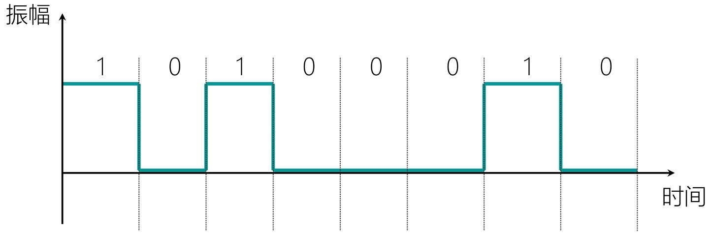
极化编码
采用正、负两种电压（比如 + 5V 和 - 5V），取消低电平（0V），从根源上减轻直流分量（正负电压平均后接近 0V）
（1）非归零编码（NRZ：Non-Return to Zero）—— 基础款，应用广
每个比特间隙内，信号电平保持不变（不回到 0V），直到下一个比特才可能变化。分为两种：NRZ-L 和 NRZ-
NRZ-L（非归零电平编码） 是 “电平代表比特”
NRZ-I（非归零反相编码） 是 “翻转代表比特”：电平翻转代表1，否则代表0
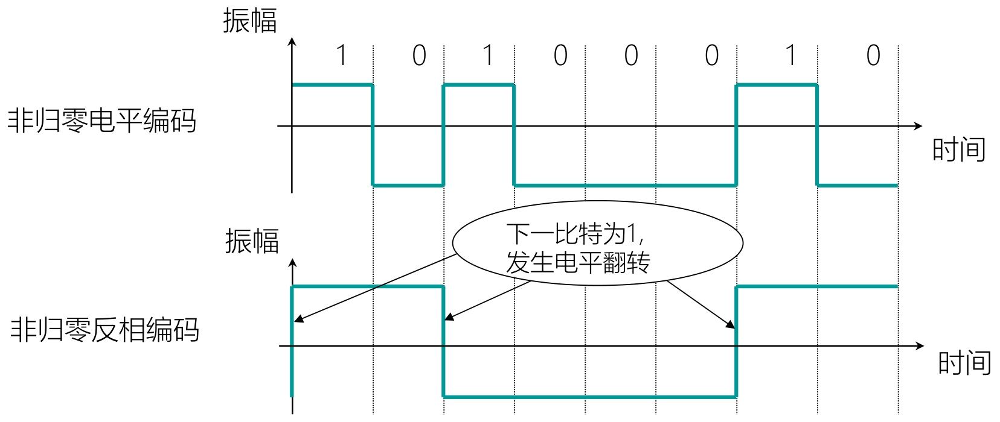
（2）归零编码（RZ：Return to Zero）—— 同步友好但带宽浪费
每个比特间隙的中间，信号必须回到 0V（归零），通过 “跳变方向” 表示 0/1，中间跳变同时实现同步。
- 电平：正电平（+5V）、负电平（-5V）、零电平（0V）；
- 比特 1：正电平→零电平的跳变（中间归零）；比特 0：负电平→零电平的跳变（中间归零）；
- 同步：每个比特中间都有跳变，接收方以跳变作为时钟同步（比如看到跳变就知道 “一个比特结束，下一个开始”）。
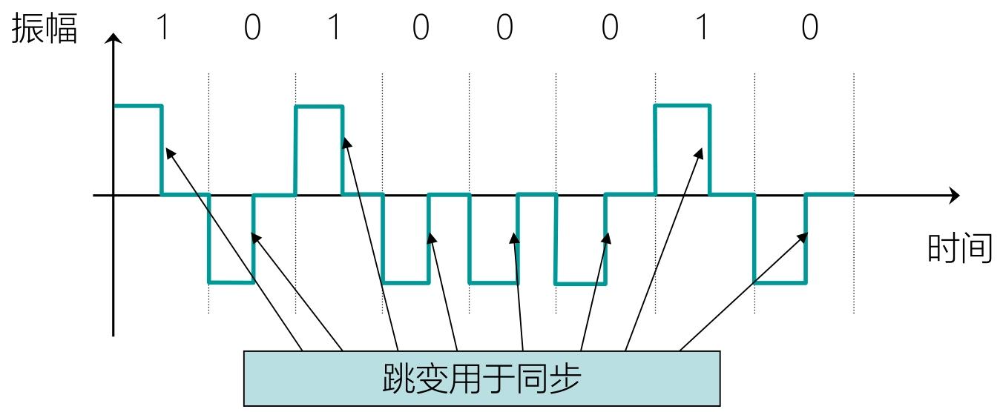
（3）双相位编码 —— 同步 + 抗干扰最优，网络核心编码
每个比特间隙的中间必须跳变（不归零），跳变既用于同步，又用于表示比特（或仅用于同步），完美解决同步问题，抗干扰性强。
分为两种：曼彻斯特编码（MPE） 和差分曼彻斯特编码（DME）
| 编码类型 | 核心规则（同步 + 比特表示） | 优缺点 | 适用场景 |
|---|---|---|---|
| 曼彻斯特编码（MPE） | 1. 同步：每个比特中间必须跳变（时钟同步）；2. 比特表示：跳变方向决定比特 ———— 负电平→正电平（上升沿）= 比特 1；—— 正电平→负电平（下降沿）= 比特 0；（课件明确约定，不同标准可能相反，但考试按课件记！） | 优点：同步能力强（中间跳变）、抗干扰强（跳变明显，噪声难掩盖）；缺点：带宽占用高（比 NRZ 高一倍，每个比特都有跳变） | 以太网（网线传输）的核心编码！（IEEE 802.3 标准强制要求） |
| 差分曼彻斯特编码（DME） | 1. 同步：每个比特中间必须跳变（仅用于同步，和比特值无关）；2. 比特表示：比特间隙开始位置是否跳变决定比特 ———— 开始位置有跳变 = 比特 0；—— 开始位置无跳变 = 比特 1；（中间跳变仅同步，不代表比特！） | 优点：抗干扰性比曼彻斯特更强（开始跳变比中间跳变更易识别）；缺点：实现复杂（需要区分 “开始跳变” 和 “中间跳变”） | 令牌环网、工业控制网络（对干扰敏感的场景） |
- 曼彻斯特编码：中间跳变→既同步又表示比特；将时钟信号与数据信号通过异或运算融合，使生成的 MPE 信号自带同步信息
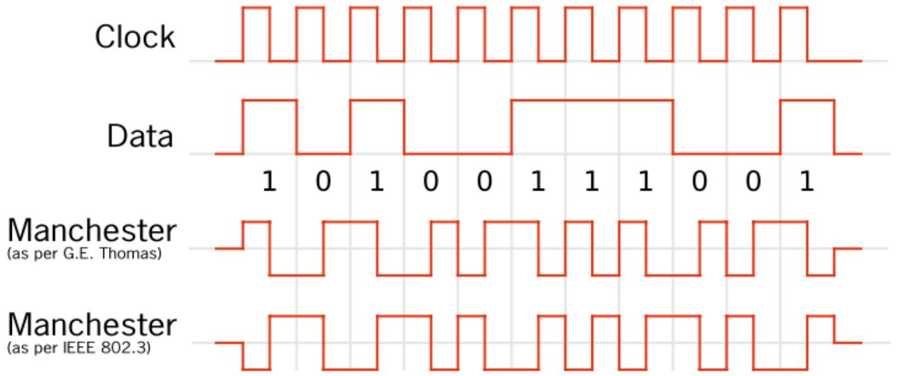
- 差分曼彻斯特编码：中间跳变→仅同步，开始跳变→表示比特。
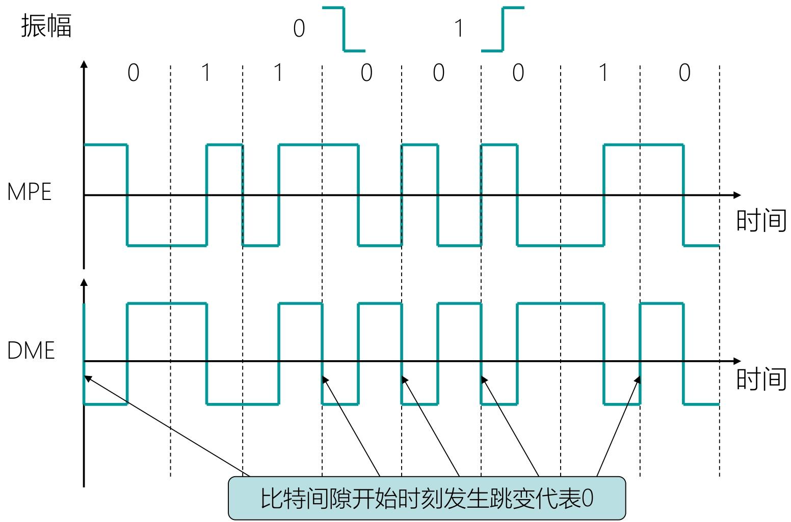
（4）4B/5B 编码 —— 解决连续 0/1 的终极方案
4B/5B 编码的目标是 “用 5 个比特表示 4 个比特”，从根源上避免连续 0/1，解决连续0或1导致的同步丢失问 题；同时提升编码效率。
- 映射关系：4 位二进制数（16 种组合）→ 5 位二进制数（32 种组合中选 16 种）；
- 选取原则（关键！）：每个 5 比特码组中，不含多于 3 个连续 0，且不少于 2 个 1（确保有足够的跳变，避免同步丢失）；
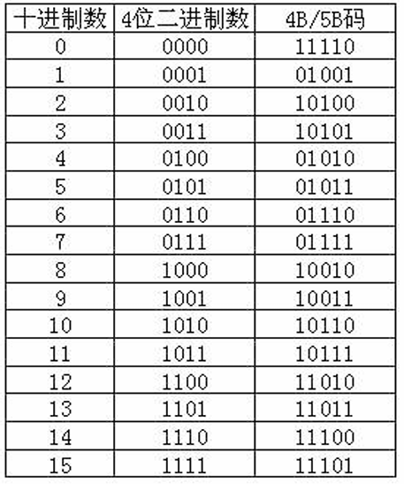
双极性编码
和极化编码类似，使用正、负、零三个电平，但编码逻辑更侧重 “平衡传输”（正负电平交替，进一步消除直流分量）
- 比特 0：零电平（0V）；
- 比特 1：正负电平交替出现（比如第一个 1→+5V，第二个 1→-5V，第三个 1→+5V，以此类推）。
比如：信号交替反转码（AMI：Alternate Mark Inversion）
- 编码规则：0→0V；1→+V 和 - V 交替（Mark 代表 1，Inversion 代表反转）；
- 改进版：B8ZS（8 零替换）、HDB3（高密度双极性 3 零编码）—— 当出现连续 0 时，用特定的正负电平组合替换（比如 HDB3 用 “+V→0→0→-V” 替换 4 个连续 0），解决同步问题。
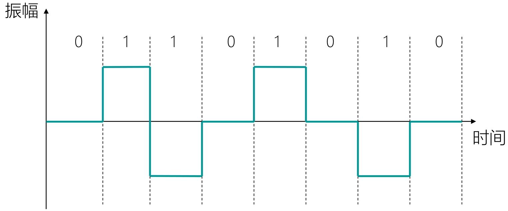
数字—模拟编码
利用模拟信号表示数字信息的技术；即用模拟信号的三个关键参数（振幅、频率、相位）的变化来代表 0 和 1，这一过程也叫 “调制”（对应英文 “Modulation”）。
所以根据三个参数的选择分为幅移键控（ASK）；频移键控（FSK）；相移键控（PSK）；正交调幅（QAM）
幅移键控（ASK：Amplitude Shift Keying）
用振幅变化表示 0/1
- 频率和相位不变，只有振幅随 0/1 变化。
- 抗干扰能力极差 —— 噪声容易改变信号振幅
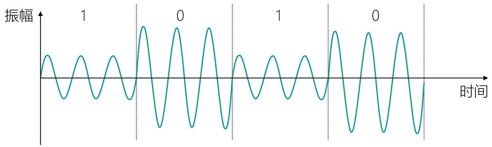
频移键控（FSK：Frequency Shift Keying）
用频率变化表示 0/1
- 振幅和相位不变，只有频率随 0/1 切换。
- 抗干扰能力比 ASK 强 —— 噪声很难改变信号频率。但是带宽占用比 ASK 高
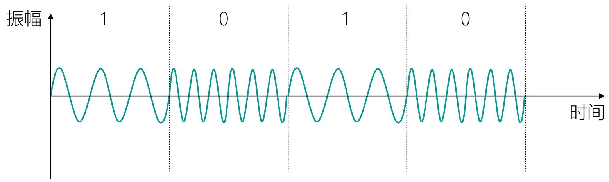
相移键控（PSK：Phase Shift Keying）
用相位变化表示 0/1
- 振幅和频率不变，只有相位随 0/1 跳变。
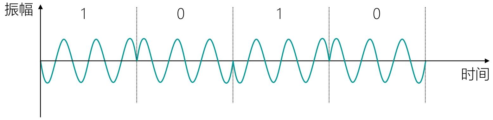
[!tip]
多进制 PSK：
相位可以有多个角度（比如 0°、90°、180°、270°），每个角度代表一组二进制比特；
- （4-PSK）：0° 相位 → 00；90° 相位 → 01；180° 相位 → 10；270° 相位 → 11；
- （8-PSK）：8 个相位状态（0°、45°、90°…315°），每个状态表示 3 个比特（比如 000、001…111）
相移键控星座图” 是 PSK 的直观表示：星座图的 “每个点” 代表一个相位状态；星座图越密集（点数越多），每个状态承载的比特数越多，传输效率越高
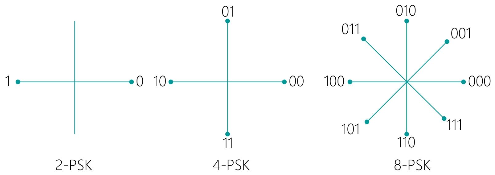
正交调幅（QAM：Quadrature Amplitude Modulation）
QAM 是 “幅移键控 + 相移键控” 的混合技术，同时操控 “振幅” 和 “相位” 两个参数，让每个信号状态承载更多比特 —— 相当于 “双重叠加提升效率”。
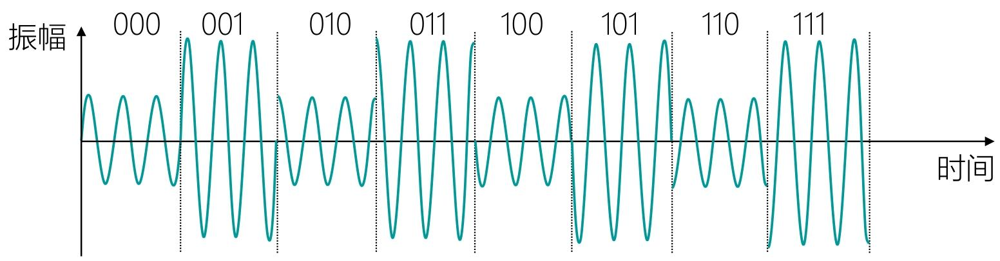
正交调幅星座图
QAM 的星座图是 “振幅 - 相位” 的二维分布：
- 横轴 / 纵轴：代表不同的相位分量；
- 每个点的 “位置”：既体现振幅（离原点的距离），又体现相位（与横轴的夹角）；
两种16相位QAM星座图：
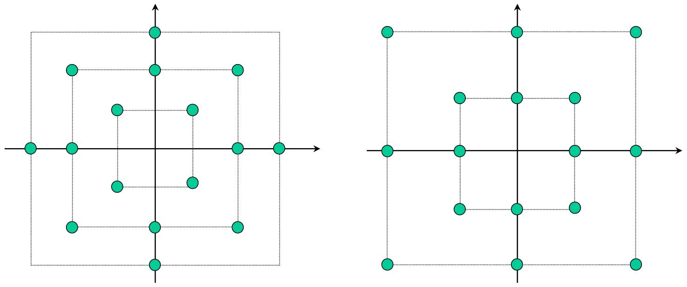
模拟—数字编码
模拟 — 数字编码，本质是 “将连续变化的模拟信号（比如声音、温度、电压），转换成离散的二进制比特流（0/1）”，这个过程也叫 “模数转换（A/D 转换）”。
模拟 — 数字编码要经过 “采样→量化→编码” 三个不可逆步骤：
- 采样 —— 将连续的模拟信号离散化；采样频率（每秒采样次数）必须大于信号最高频率的 2 倍；
- 量化—— 离散的采样值用2进制位数量化；量化位数（二进制位数）—— 量化级的数量 = 2^ 量化位数；
- 编码—— 对量化后的数据用2进制编码
模拟信号→采样点→量化等级→二进制比特流，完成 A/D 编码。
采样定理:采样频率大于信号最高频率的2倍｡
模拟 — 模拟编码
本质是 “用一个模拟信号去承载另一个模拟信号”，没有数字化过程，只是对原始模拟信号的参数（振幅、频率）进行调整，方便远距离传输或多信号复用。
- 传统有线电视、电话系统等
- “声音信号的频率范围 20Hz~20kHz，主要能量集中在 300Hz~3000Hz”。即放大信号 / 频率搬移
傅里叶分析与有限带宽信号
傅里叶分析(了解即可)
任何复杂的模拟信号，都可以被分解为多个不同频率、振幅、相位的正弦波（简单模拟信号）的叠加—— 这就是傅里叶分析的核心思想
介质带宽（Hz）：传输介质的 “频率通行证”
传输介质（网线、光纤、无线电波）只能有效传输 “某一频率范围” 内的信号，这个频率范围就是介质带宽（比如网线的带宽是 100MHz，意味着它能有效传输 0~100MHz 的信号）；
本质：介质的物理特性决定（比如导线的电阻、电容会阻碍高频信号传输），超出这个范围的信号会被大幅衰减（信号强度变弱）或失真；
有效带宽（Hz）：信号还原的 “最低频率要求”
定义：数字信号（或复杂模拟信号）由多个谐波叠加而成，若只传输 “有重要振幅分量” 的谐波（能保证信号还原精度的谐波），这些谐波的最高频率就是有效带宽；
通俗理解：有效带宽是 “还原信号所需的最小频率范围”—— 只要介质的带宽≥信号的有效带宽，就能以合理精度还原信号；若介质带宽小于有效带宽，部分关键谐波会被过滤，信号失真；
信道：信号传输的 “单向通道”
定义：表示 “向某一方向传送信息的媒体”—— 注意 “单向” 是核心（比如从 A 到 B 的网线是一条信道，从 B 到 A 的是另一条信道）；
与 “传输介质” 的区别：传输介质是物理载体（比如一根网线），信道是介质上的 “逻辑通道”；
- 例：一根网线可以同时承载两条信道（A→B 和 B→A），实现双向通信；
信道容量（bps）：传输介质的 “最大传输速度”
定义：传输介质在单位时间内可以传输的最大比特数（单位 bps），是衡量介质传输能力的核心指标；
- 关键影响因素：
- 介质带宽：带宽越大，能传输的谐波越多，信道容量越高（比如光纤带宽远大于铜线，信道容量也远高于铜线）；
- 编码技术：相同带宽下，高效编码（比如 QAM、曼彻斯特编码）能提升信道容量（比如 64-QAM 比 2-PSK 的容量高 6 倍）；
[!note]
傅里叶分析→复杂信号由多个谐波组成→需要传输关键谐波（有效带宽）→传输介质的带宽必须≥信号有效带宽（否则失真）→介质带宽 + 编码技术决定信道容量（最大传输速度）。
基带信号和带通信号(了解即可)
基带信号和带通信号，它们的本质区别是 “是否经过载波调制（频谱搬移）”
基带信号（基本频带信号）
基带信号是来自信源的原始信号，未经过任何频谱搬移和变换
- 包含较多低频成分，甚至有直流分量（0Hz）：
- 直流分量：信号的平均电平不为 0（比如单极性编码的高电平持续存在，相当于直流）；
- 低频成分：信号变化缓慢的部分（比如连续多个 0 对应的低电平，频率接近 0）。
- 解决方法：发送设备产生一个高频信号作为基波来承载信息信号((基波称为载波信号)
- 传输受限：许多信道不能传输低频或直流分量 —— 比如无线电波信道、传统电话线信道，会过滤掉低频信号，导致基带信号失真或无法传输。
带通信号
带通信号是基带信号经过载波调制后的信号—— 通过高频载波信号 “承载” 基带信号，让原本不能远距离传输的基带信号，能在特定信道中传输。
- 使用载波信号传输基带信号的过程称为调制(modulation)
奈氏准则
奈氏准则的核心是：无噪声情况下，信道的最大码元速率（波特率）是信道带宽的 2 倍，再结合码元状态数，就能算出最大比特率（数据传输率），它为无噪声信道的传输能力划定了理论上限。
- 码元：携带数据信息的最小信号单元，比如一个高电平、一个相位变化、一个频率跳变，都可以是一个码元（相当于 “信号的基本包装单位”）；
- 二进制码元：最基础的码元类型，只有 2 种状态（比如高 = 1、低 = 0），单位时间内的这种信号间隔叫 “码元长度”（比如 1 个码元长度 = 0.125 秒，意味着每秒能传 8 个码元）；
- 码元速率（波特率 B）：每秒传输的码元个数，单位是 “波特（Baud）”，描述的是 “信号单元传输的快慢”（不是数据传输的快慢）。
公式 1：无噪声信道的最大码元速率（波特率上限）B=2×W(单位：Baud);W 是信道带宽（单位：Hz），B是最大波特率
公式 2：无噪声信道的最大比特率（数据传输率上限）S=B×log2N=2×W×log2N(单位：bps)；S 是最大比特率，N 是码元状态数
香农(Shannon)定理
信道总是要受到噪声的干扰，所以需要使用香农定理弥补奈氏准则
香农定理的核心是：有噪声时，信道的最大传输速率（信道容量）由 “信道带宽” 和 “信噪比” 共同决定，与码元状态数无关，它为现实信道的传输能力划定了理论上限。
噪声环境中有限带宽介质信道的最大传输速率C与信道带宽和信号噪声功率比之间的关系
C=W×log2(1+S/N)（单位：bps）
W：信道带宽（Hz）；S：平均信号功率（W）；N：平均噪声功率（W）
- 信噪比（S/N）与分贝（dB）换算
- 信噪比（S/N）：信号功率与噪声功率的比值，是 “信号清晰度” 的指标（S/N 越大，信号越清晰）；
- 信噪比（dB)=10×log10(S/N)
多路复用技术
多路复用技术是数据通信的 “资源优化神器”—— 核心逻辑是用一条物理链路同时传输多路信号，最大化利用传输介质的带宽，降低通信成本。
四类核心技术：频分多路复用（FDM）、时分多路复用（TDM，含同步 / 异步）、波分多路复用（WDM）、码分多路复用（CDM）。
| 技术类型 | 核心区分维度 | 适用信号 | 带宽利用率 | 典型场景 | 核心特点 |
|---|---|---|---|---|---|
| FDM | 频率划分 | 模拟信号为主 | 低 | 有线电视、广播 | 独占子频带，有警戒频带 |
| TDM - 同步 | 固定时间片 | 数字信号（连续） | 中 | 电话交换机、实时控制 | 时间片固定，实时性强 |
| TDM - 异步 | 动态时间片 | 数字信号（突发） | 高 | 互联网核心交换 | 按需分配，利用率高 |
| WDM | 波长划分（光） | 光信号 | 极高 | 光纤骨干网 | 速率 T 级，抗干扰强 |
| CDM | 码片序列划分 | 数字信号 | 高 | 3G、卫星通信 | 共享频率时间，抗干扰强 |
频分多路复用（FDM：Frequency Division Multiplexing）
- 把物理链路的总带宽分割成多个互不重叠的子频带（每个子频带 = 一个独立信道）；
- 每个用户独占一个子频带，从通信开始到结束全程占用，不同用户的信号在不同频率上并行传输；
- 关键：子频带之间必须留 “警戒频带/隔离频带”（空白频率），避免不同信道的信号相互干扰。
- 注意：FDM 的 “带宽” 是频率带宽（Hz），不是数据传输率（bps）
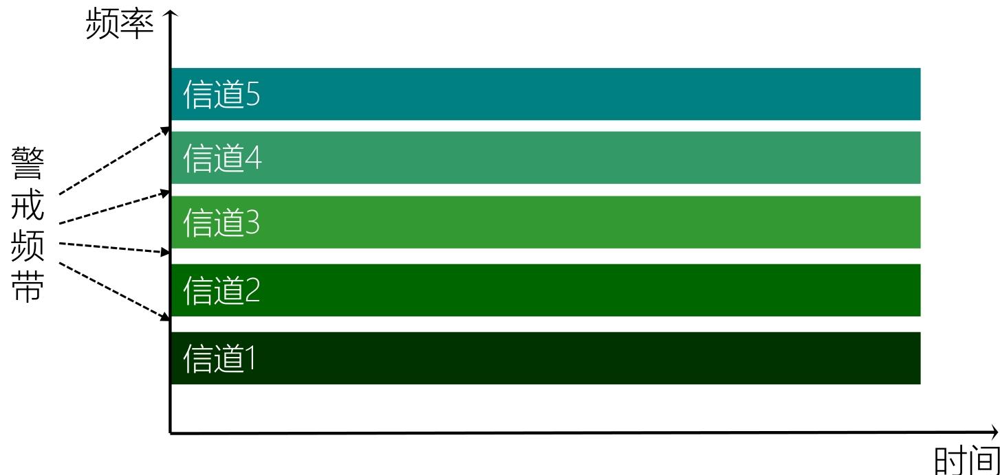
时分多路复用（TDM：Time Division Multiplexing）
- 把物理链路的总传输时间分割成固定长度的 “时间片”（每个时间片 = 一个独立信道）；
- 每个用户轮流占用一个时间片，按顺序循环使用链路
- 关键：所有用户共享同一带宽，只是在不同时间占用，适用于数字信号传输。
- 仅适用于数字信号（比如 0/1 比特流），因为数字信号是离散的，可在固定时间片内精准传输。
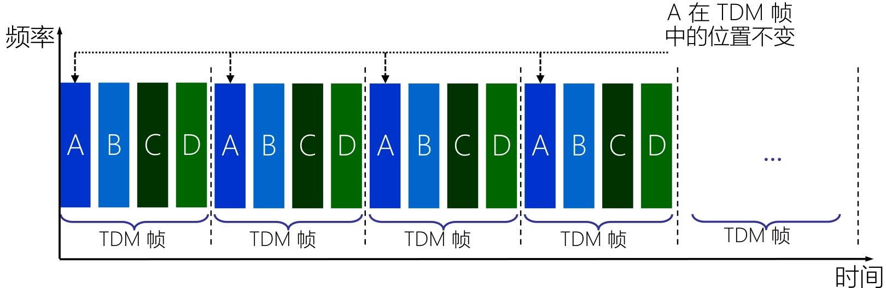
- 时隙周期性出现：每个用户的时间片会按固定周期重复
- 共享频带宽度：所有用户在不同时间占用同样的频带宽度，只是时间上错开，不会冲突。
- 定义：将多个用户的时间片组合成一个 “帧”（比如 A、B、C、D 各 1 个时间片，组成 1 个 TDM 帧）；
- 周期：1 个 TDM 帧的长度就是用户时间片的重复周期（比如帧长 = 4ms，用户 A 每 4ms 占用 1 次 1ms 时间片）；
同步时分多路复用 TDM
时间片分配 “固定不变”
- 复用器给每个用户分配固定数量的时间片，无论用户是否有数据要传，时间片都预留着，位置固定不变；
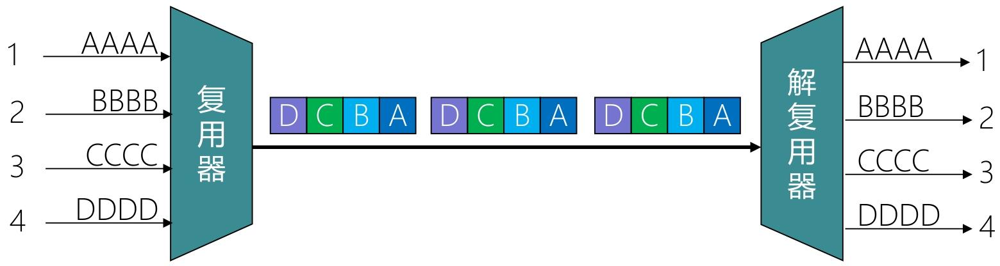
- 同步TDM可能浪费资源
- 用户 3 只有 c、c 数据，用户 4 只有 d 数据，但同步 TDM 仍为它们预留固定时间片，导致链路资源浪费
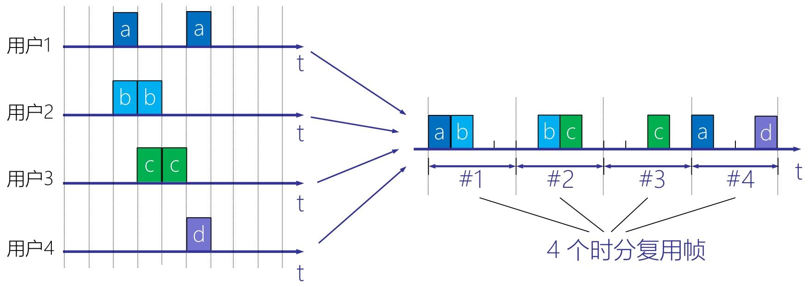
异步时分多路复用（STDM）
时间片 “按需动态分配”
- 又称 “统计复用”，复用器不预留固定时间片，只给有数据要传的用户分配时间片；
- 所以每帧的时间片数量小于输入设备数量；
- 数据单元需附带地址信息，方便解复用器识别归属；
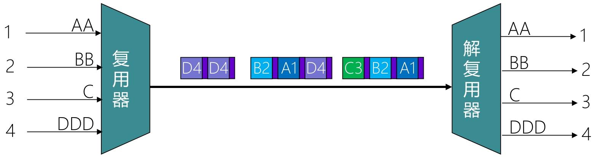
- STDM帧 中的时隙不是固定地分配给某个用户，因此每个时隙中还必须要有
用户的地址信息，因此造成开销 - 如下图，输出线路上每个时隙之前的
短时隙（白色）用于存放用户地址信息
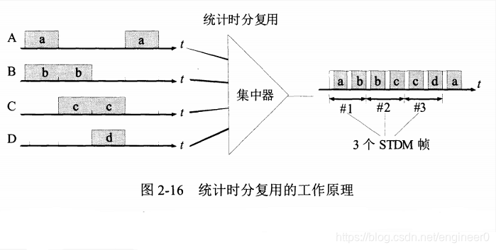
[!tip]
对比维度 同步 TDM 异步 TDM（STDM） 时间片分配 固定不变，为每个用户预留 按需分配，只给有数据的用户 帧大小 固定（时间片数量固定） 可变（时间片数量随数据量变化） 资源利用率 低（空闲时间片浪费） 高（无空闲浪费） 实时性 强（无排队延迟） 较弱（可能排队等待） 额外开销 无（无需地址信息） 有（数据带地址，需缓存） 适用数据类型 连续数据（语音、实时控制） 突发数据（上网、文件传输） 核心设备要求 简单（无需缓存和队列管理） 复杂（需缓存、队列管理、地址识别）
波分多路复用（WDM：Wavelength Division Multiplexing）
- 本质：FDM 在光纤通信中的特殊应用 —— 把 “频率” 换成 “光的波长”；
- 用多个激光器产生不同波长的激光（每个波长 = 一个独立信道），将多路光信号调制到不同波长上，通过合波器合并后，在单根光纤中传输；
- 同时各个信道之间也有类似于FDM一样的隔离频带
- 接收端用分波器将不同波长的光信号分离，分别解调还原数据。
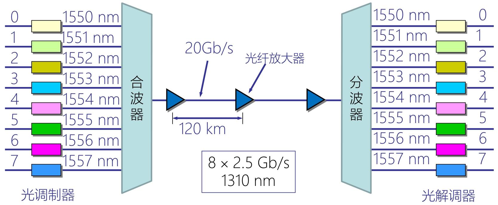
码分多路复用（CDM：Code Division Multiplexing）
码分多路复用（又称码分多址复用，CDMA）是一种所有用户共享同一频率和带宽，仅通过 “独特码型” 区分信号的复用技术，核心是 “码片序列的正交性”。
码分多路复用又称码分多址复用CDMA
码片：将每个比特的传输时间细分为
m个更短的时间间隔（课件中m=8），每个间隔称为 1 个 “码片”；- 码片序列：为每个用户分配一个长度为
m的二进制码（课件中站点 A 的码片序列是0 0 0 1 1 0 1 1）； - 双极型表示：为了计算正交性，将码片中的
0映射为-1、1映射为+1（课件中 A 的双极型码片序列是-1 -1 -1 +1 +1 -1 +1 +1）。
[!note]
CDMA 的关键是不同用户的码片序列相互正交，即两个不同用户的码片序列做 “内积运算” 结果为 0。
- 内积运算规则：两个码片序列对应位置的元素相乘，再求和，最后除以码片长度
m；- 正交性定义：若用户 X 和 Y 的码片序列内积为 0，则两者正交（信号互不干扰）；若内积为 1，则是同一用户的信号；若内积为 - 1，则是该用户的反码（对应发送比特 0）。
信号发送规则(站点A （0 0 0 1 1 0 1 1）)
- 发送比特
1：发送自身的双极型码片序列（如站点 A 发送-1 -1 -1 +1 +1 -1 +1 +1）； - 发送比特
0：发送自身码片序列的反码（如站点 A 的反码是+1 +1 +1 -1 -1 +1 -1 -1）。
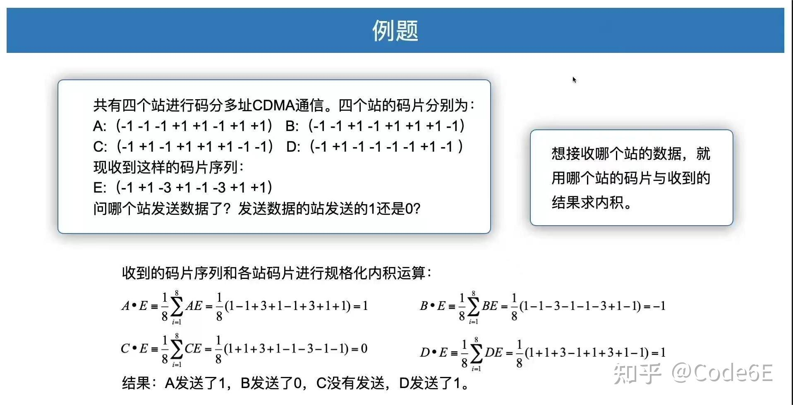
数据交换技术
- 当网络中有大量设备时，不可能每两台设备都直接连接物理链路（成本极高）
- 数据交换技术的核心是通过中间设备（交换机、路由器）为设备间临时建立通信路径，实现无直接物理连接（没有物理链路直接连接）的设备互通。
三种基本交换方式
| 交换方式 | 核心特征 | 延迟 | 链路利用率 | 适用场景 |
|---|---|---|---|---|
| 电路交换 | 独占物理链路 | 最小（实时） | 低 | 语音通话、视频会议（实时通信） |
| 报文交换 | 存储完整报文转发 | 最大 | 中 | 早期电报（已淘汰） |
| 分组交换 | 存储分组转发 | 中 | 高 | 互联网、文件传输、手机数据（突发 / 非实时通信） |
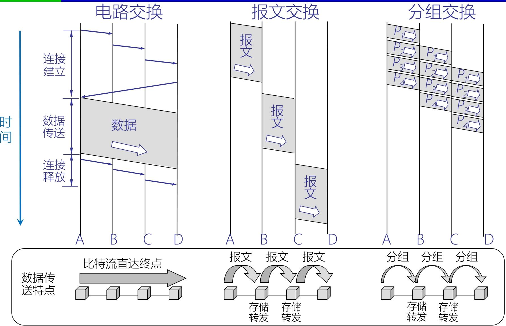
其它交换技术： ATM交换（信元交换）；帧中继
电路交换
- 电路交换是早期通信网络的核心交换技术，核心逻辑是 “为通信双方建立一条临时独占的物理链路”
- 通信前，在两个设备之间建立一条完全独占的物理通路
- 电路交换机可以理解为 “可动态切换的多路开关”—— 通过切换开关位置，为不同设备对（如 A-B、B-C）接通对应的物理链路。
电路交换过程包括：电路建立、数据传输、电路拆除
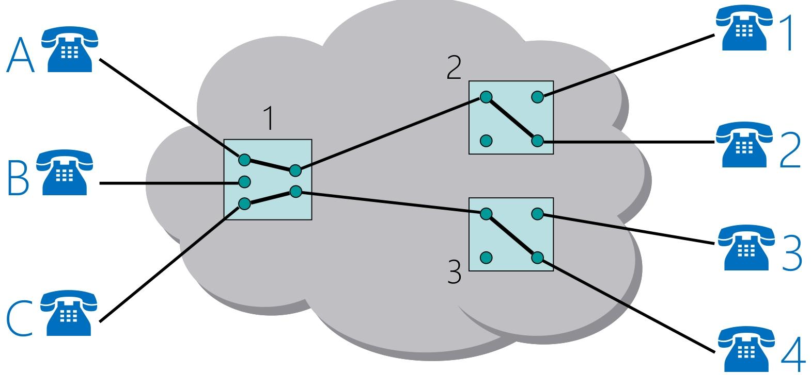
报文交换
报文交换是第二代数据交换技术，核心标签就是你提到的存储转发—— 它彻底改变了电路交换 “独占链路” 的模式，也是分组交换技术的前身。
- 通信双方不需要提前建立物理通路，发送方直接将完整的报文（发送到网络中。
- 网络中的中间节点（如交换机、路由器）收到完整报文后，先将其全部存入本地缓存；然后校验转发
- 传输延迟极大：中间节点必须等待整个报文完全接收并校验完毕，才能开始转发。
- 同时报文错误后，重传的代价很大，必须传递整个大报文
分组交换
分组交换的核心是将较长的报文拆分为较短的数据包，以包为单位存储转发
- 在报文交换的基础上，将完整的长报文拆分成若干个等长的短数据单元。
- 给每个短数据单元附加通信控制信息，最终形成一个独立的分组（Packet）。比如源IP，目的IP，分组编号以及校验码等
- 包长度一般比报文短得多，只要包到达后就可以转发，不必等待报文全部到达，缩短传输延迟；类似于”流水线“
- 同时容错性强：单个分组传输失败（比如丢失、损坏），只需重传这一个分组，无需重传整个报文
分组交换的两种类型
数据报：无连接、独立传输的 “自由分组”
核心就是 “每个分组独立处理，链路共享，乱序到达”。
- 每个包独立于其他包处理
- 任何一条链路可同时为多对设备服务
- 分组乱序到达，传输层负责重新排序
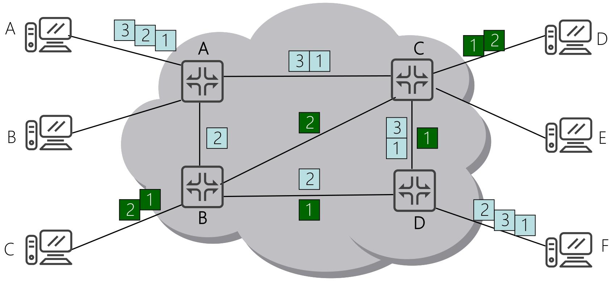
虚电路：有连接、有序传输的 “逻辑专线”
虚电路是 “分组交换 + 电路交换” 的结合体 ;核心是 “维持同一次通信的所有包的关系，提前选定路径”
- 同一次通信的所有包维持关系，提前选定路径
- 传输分组时仅需携带虚电路号，减少开销
虚电路与电路交换的本质区别：
| 对比维度 | 虚电路（分组交换） | 电路交换 | | -------- | ------------------------------------------------------------ | ---------------------------------------------------------- | | 链路性质 | 建立的是逻辑路径，同一物理链路可同时承载多条虚电路（链路共享） | 建立的是物理独占链路，链路只能被一对设备使用 | | 资源占用 | 仅在传输分组时占用链路，无分组传输时链路可分配给其他虚电路 | 通信全程独占链路，即使无数据传输，链路也无法被其他设备使用 | | 技术归属 | 属于分组交换，基于 “存储 - 转发” 机制 | 属于电路交换，无存储转发，直接比特流传输 |
同时根据虚电路的存在时间，分为交换虚电路（SVC） 和永久虚电路（PVC），两者的核心区别是 “是否按需创建”。
- 交换虚电路（SVC）:按需创建，用完即删。
- 永久虚电路（PVC）：长期存在，固定分配。
优点：分组有序到达，无需传输层排序；控制信息开销小；延迟稳定，通信质量可控
[!tip]
分组交换 vs 电路交换：
对比维度 电路交换 分组交换 链路占用方式 独占物理链路，通信全程专用 共享链路，多路分组穿插传输 资源利用率 极低（空闲时链路浪费） 极高（链路始终高效利用） 拥塞 / 流量控制 无，要么通要么断 有，缓存排队导致延迟增大 通信模式支持 仅支持点对点通信 支持点对点、广播、多播 设备兼容性 仅支持同类、同速率设备 支持异构设备（电脑 / 手机 / 传感器等） 适用场景 语音通话、视频会议等实时性要求极高的业务 网页浏览、文件下载、直播等突发式、非实时的业务
错误检测编码
错误检测编码的本质是通过添加冗余码，建立 “原始数据” 和 “校验信息” 的关联规则，以此判断数据在传输过程中是否发生失真。
- 发送方操作：添加冗余码，按照预设的校验规则计算出一段冗余码，将数据和冗余码一起发送
- 接收方操作：规则校验：接收方收到 “原始数据 + 冗余码” 后，使用和发送方完全相同的校验规则重新计算；
- 编码效率：数据信息在整个发送信息中的比重，即R=n/k=原始数据比特数/(原始数据比特数+冗余码比特数)；
检错码 vs 纠错码
- 检错码：只 “查错” 不 “纠错”，即给发送信息加上冗余位，使其具备检错功能，所以检测到错误后，一般通过重传机制请求发送方重新传输数据
- 纠错码：既 “查错” 又 “纠错”，即能检错，同时能纠正错误的冗余码
数据在传输中受电磁干扰、信号衰减等影响，会出现不同类型的比特错误，将其分为三类
- 单比特错误：同一传输单元中，仅有 1 个比特位发生翻转；
- 多比特错误：同一传输单元中，有 2 个及以上不连续的比特位发生翻转；
- 突发错误：同一传输单元中，连续多个比特位发生翻转，是实际传输中最常见的错误类型
奇偶校验码
奇偶校验码是最简单、最常用的检错码，核心是通过添加 1 位校验位，让数据中 “1” 的个数满足 “奇数” 或 “偶数” 规则，以此检测传输错误。
- 偶校验：让
数据单元 + 校验位中 “1” 的总数为偶数；r=b1⊕b2⊕b3⊕⋯⊕bm - 奇校验：让
数据单元 + 校验位中 “1” 的总数为奇数；r=b1⊕b2⊕b3⊕⋯⊕bm⊕1`即在偶校验结果的基础上异或 1，翻转结果的奇偶性；
发送方发送数据时，连同校验位r一起发送；接收方根据结果，判断是否发生差错
当传输多块数据时，单一的 “逐块校验”（垂直校验）检错能力有限，因此衍生出水平校验和纵横校验
- 垂直（纵向）偶校验：对每一块数据单独计算校验位，附加在该块数据的末尾；
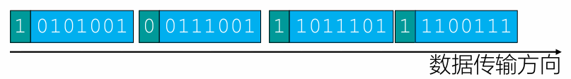
- 水平(横向)偶校验：对多块数据的 “相同位置比特” 进行偶校验，生成 1 个 “水平校验块”；
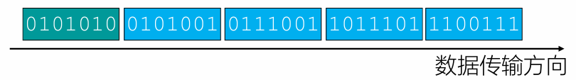
- 水平垂直（纵横）偶校验：同时做垂直校验和水平校验，形成 “数据矩阵 + 校验矩阵”；
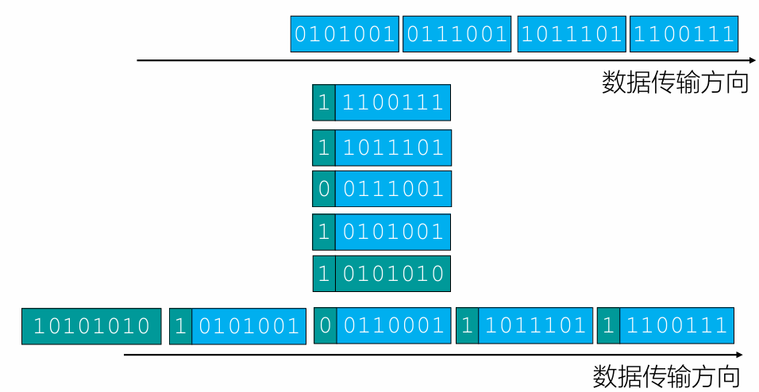
奇偶校验码只能检错，不能纠错，不同校验方式的检错能力差异很大：
| 校验方式 | 能检测的错误 | 不能检测的错误 |
|---|---|---|
| 垂直偶校验 | 1. 单个数据单元内的单比特错误（1 个比特翻转）2. 单个数据单元内的奇数个比特错误（如 3、5 个比特翻转） | 1. 单个数据单元内的偶数个比特错误（如 2、4 个比特翻转，奇偶性不变）2. 跨数据块的同一位错误 |
| 水平偶校验 | 1. 多块数据中同一位的奇数个错误（如块 1、块 3 的第 2 位同时翻转，共 2 个？不，奇数个：块 1、块 3、块 4 的第 2 位翻转，共 3 个）2. 单个数据单元内的突发错误（连续多个比特翻转，若总数为奇数） | 1. 多块数据中同一位的偶数个错误2. 同一数据单元内的偶数个比特错误 |
| 水平垂直（纵横）偶校验 | 几乎所有错误：1. 单比特 / 奇数个比特错误2. 跨块同一位错误3. 大部分突发错误 | 唯一漏检情况：数据块中 偶数个数据单元 的 偶数个相同位 同时出错（比如块 1 和块 2 的第 2、3 位同时翻转，共 2 个单元 ×2 个比特 = 4 个错误，奇偶性不变） |
循环冗余校验码（CRC）
CRC 的本质是基于 “模 2 除法” 的余数校验
- 通信双方提前约定一个生成多项式Gx)（相当于校验规则）；如 G(x)=x^4+x^3+1=11001，即m=4
- 发送方将待发送数据 U(x) 左移 m 位（m 是 G(x) 的最高阶数），再用模 2 除法除以 G(x)，得到 m 位余数 R(x)；
- 发送方将余数 R(x) 拼接在原始数据 U(x) 末尾，形成完整传输数据；
- 接收方用同样的G(x)对收到的完整数据做模 2 除法：
- 若余数为 0 → 判定数据传输无误；
- 若余数不为 0 → 判定数据传输出错。
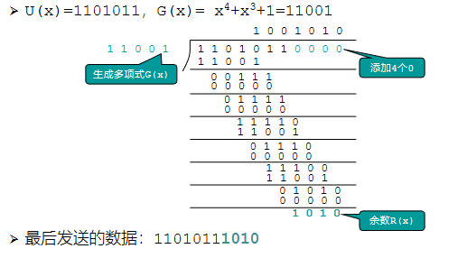
接收方收到 11010111010 后，用 G(x)=11001 做模 2 除法：
[!tip]
明确 CRC 的除法是无借位的模 2 法则，和我们日常的十进制除法完全不同，规则如下：
模 2 加法 / 减法：等价于异或运算，规则：相同为 0，不同为 1。
被除数的最高位与除数对齐，从高位开始逐位计算；
若被除数当前最高位是 1：用除数与被除数对应位做模 2 减法（异或），得到新的被除数；
若被除数当前最高位是 0：用全 0 序列与被除数对应位做异或，得到新的被除数；
重复上述步骤，直到被除数的长度小于除数长度，此时的被除数就是余数 R(x)。余数长度必须等于 G(x) 的最高阶 m，不足时高位补 0；
CRC 的检错能力由生成多项式 G(x) 的最高阶 r 决定
- 能检测出所有奇数位的突发性错误：无论错误比特数是 3、5、7 等奇数，CRC 都能 100% 检测；
- 能检测出所有长度小于 r 的突发性错误：比如 r=4，长度 1~3 位的连续错误，100% 检测；
- 检测长度为 r+1 的突发性错误的概率为(2^r-1)/2^r：比如 r=4，长度 5 位的突发错误，检测概率为 15/16=93.75%；
- 检测长度大于r+1 的突发性错误的概率为(2^r-1)/2^r ：概率同样极高。
CRC-32 是应用最广的标准，生成多项式为：
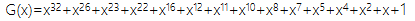
校验和
发送方通过 “求和 + 取反” 生成校验和，接收方通过 “求和 + 校验” 判断数据是否出错，核心规则是二进制加法 + 进位循环 + 按位取反。
数据分段：待传输的数据被分成 4 个 8 比特（1 字节）的数据段；整个数据单元分成大小都为n（一般为16）
- 加法：二进制无符号加法，产生的进位需循环加到结果的最低位（这是校验和的关键规则即反码加法）；
- 取反：按位取反，0 变 1，1 变 0；
- 校验准则：接收方将所有数据段 + 校验和求和，若结果为 全 1（8 比特则为
11111111），判定数据无错。
对于发送方：
“4 个数据段求和 → 处理进位 → 取反得到校验和”
- 4 个数据段逐次二进制求和（含进位循环）
- 溢出的进位需要循环加到 8 位结果的最低位即反码加法
- 按位取反，得到校验和
对于接收方：
“4 个数据段 + 校验和求和 → 处理进位 → 判断是否全 1”
- 接收方收到 4 个数据段和校验和后，执行与发送方相同的二进制加法，包括进位循环：
- (数据段总和+校验和)=(数据段总和)+~(数据段总和)；所以将数据和加上校验和判断是否为全
1
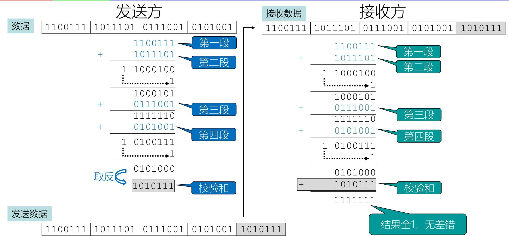